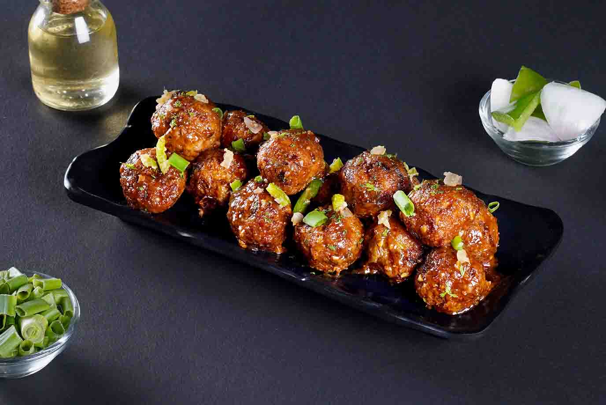

Veg Manchurian

Description
The Vegetable Manchurian (Dry) Recipe is a very popular Indian Chinese dish is made from finely minced
vegetables, coated with corn flour and pan fried, then dipped in a tangy and spicy soy sauce.
The Vegetable Manchurian Balls, when coated with a sweet spicy sauce make great appetisers for parties.
Ingredients
- Cabbage, Carrot, Pepper, Onion, Potatoes
- Corn flour
- Black Pepper Powder
- Salt
- Olive Oil
Steps
- Heat oil in a large pot over medium heat.
- Mix flour, cornmeal, water, black pepper, and salt together in a bowl to make a thick batter. Toss in cauliflower florets and mix until coated.
- Deep fry cauliflower a few florets at a time until golden brown, about 3 minutes. Transfer to a paper towel-lined plate.
- Mix 1/4 cup vegetable stock with cornmeal in a bowl. Add soy sauce, ketchup, chile-garlic sauce, and salt
- Heat oil in a wok or frying pan over high heat. Add onions, chile pepper, garlic, and ginger and stir fry for a few seconds. Add cornmeal mixture and cook 1 to 2 minutes. Add remaining vegetable stock and cook until very thick, about 10 minutes. Remove sauce from heat.
- Spoon sauce over fried cauliflower and toss slightly. Garnish with green onions and serve.